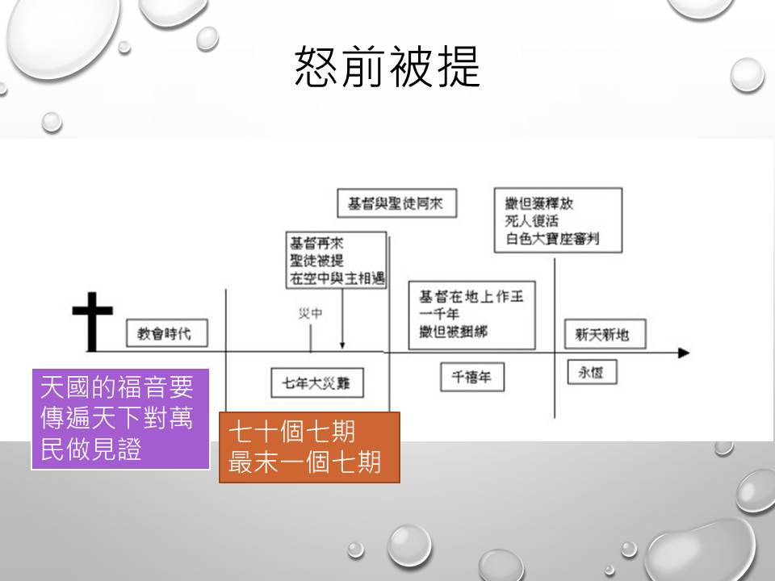

主日講題: 被提是忍耐到底的盼望
經文:帖前四章15～17節;
馬太福音廿四章37～46節;
啟示錄三章7～12節
slide 2
聖經中的啟示
- 新冠疫情讓我們更加感受到「末期」靠近了
- 6:7 揭開第四印的時候，我聽見第四個活物說：「你來！」
- 6:8 我就觀看，見有一匹灰色馬；騎在馬上的，名字叫作死，陰府也隨著他；有權柄賜給他們，可以用刀劍、饑荒、瘟疫、野獸，殺害地上四分之一的人。
上帝如何讓我們相信他所預言將來的事，會按照預言的內容發生？69個七期的預言都應驗了，耶穌基督復活叫我們相信末期
slide 3
被提與使徒信經的關係
- 使徒信經
- 第二段：我信耶穌基督～～～～
- 第三天從死裏復活；後升天，坐在無所不能的父上帝的右邊；將來要從那裏降臨，審判活人、死人。
- 耶穌再來之前將要有被提的事。
第一段：創造，創世記第一章、第二章，是上帝口述、人（亞當）轉述口傳，摩西整理紀錄下來，沒有人在現場，我們只能相信「上帝說」
第二段，耶穌基督，受死、復活、升天，都是歷史，我們都有見證人的印證，可以知道是真的。
而耶穌基督再來，是未來的事，我們只能用信心「相信」
上帝用什麼方式，叫我們相信耶穌預言未來的「降臨」是真的會發生的事？
slide 4
被提與使徒信經的關係
- 帖前四15-17
- 我們現在照主的話告訴你們一件事：我們這活著還存留到主降臨的人，斷不能在那已經睡了的人之先。
- 因為主必親自從天降臨，有呼叫的聲音和天使長的聲音，又有 神的號吹響；那在基督裡死了的人必先復活。
- 以後我們這活著還存留的人必和他們一同被提到雲裡，在空中與主相遇。這樣，我們就要和主永遠同在。
「被提」是與耶穌基督再來有密切的關係
slide 5
馬太福音廿四章
- 挪亞的日子怎樣，人子降臨也要怎樣。
- 當洪水以前的日子，人照常吃喝嫁娶，直到挪亞進方舟的那日；
- 不知不覺洪水來了，把他們全都沖去。人子降臨也要這樣。
- 那時，兩個人在田裡，取去一個，撇下一個。
- 兩個女人推磨，取去一個，撇下一個。
- 所以，你們要警醒，因為不知道你們的主是哪一天來到。
就在討論「世界的末了」天國的福音要傳遍天下對萬民做見證，然後「末期」才來到。
不知不覺的時候，兩個取去一個、撇下一個。被提的事就發生了。
所以要警醒，要做什麼呢？請看下面的經文
slide 6
- 家主若知道幾更天有賊來，就必警醒，不容人挖透房屋；這是你們所知道的。
- 所以，你們也要預備，因為你們想不到的時候，人子就來了。」
- 「誰是忠心有見識的僕人，為主人所派，管理家裡的人，按時分糧給他們呢？
- 主人來到，看見他這樣行，那僕人就有福了。
主來的時候，如夜間的賊（不知不覺中就來了），要尋找忍耐到底的得勝者. 誰是有忠心、有見識的僕人，按時分糧給家裡的人
slide 7
路加福音十七章30-36節
30 人子顯現的日子也要這樣。
31 當那日，人在房上，器具在屋裡，不要下來拿；人在田裡，也不要回家。
32 你們要回想羅得的妻子。
33 凡想要保全生命的，必喪掉生命；凡喪掉生命的，必救活生命。
34 我對你們說，當那一夜，兩個人在一個床上，要取去一個，撇下一個。
35 兩個女人一同推磨，要取去一個，撇下一個。
slide 8
帖前五：1-6
弟兄們、論到時候日期、不用寫信給你們．因為你們自己明明曉得、主的日子來到、好像夜間的賊一樣。人正說平安穩妥的時候、災禍忽然臨到他們、如同產難臨到懷胎的婦人一樣．他們絕不能逃脫。弟兄們、你們卻不在黑暗裏、叫那日子臨到你們像賊一樣。你們都是光明之子、都是白晝之子、我們不是屬黑夜的、也不是屬幽暗的．
所以我們不要睡覺、像別人一樣、總要儆醒謹守。
slide 9
（林前十五51-52）
- 「看哪，我把一個奧秘告訴你們：我們不是都要睡覺，乃是都要改變，就是在一剎那，眨眼之間，末次號筒的時候；因號筒要響，死人要復活，成為不朽壞的，我們也要改變。 」
末次號筒吹響，死的聖徒要復活，活的聖徒要改變「被提」
slide 10
羅馬書十一：25-27
- 弟兄們、我不願意你們不知道這奧秘、（恐怕你們自以為聰明）就是以色列人有幾分是硬心的、等到外邦人的數目添滿了．於是以色列全家都要得救、如經上所記、『必有一位救主、從錫安出來、要消除雅各家的一切罪惡。』又說、『我除去他們罪的時候、這就是我與他們所立的約。』
slide 11
馬太福音廿四章
- 只因不法的事增多，許多人的愛心才漸漸冷淡了。
- 惟有忍耐到底的，必然得救。
- 這天國的福音要傳遍天下，對萬民作見證，然後末期才來到。」
- 「你們看見先知但以理所說的『那行毀壞可憎的』站在聖地（讀這經的人須要會意）。
愛心：愛靈魂的心
忍耐到底：忍耐持續愛靈魂，將福音傳遍天下，對萬民作見證
末期：七十個七期的最末七期：七年大災難
slide 12
被提是不易了解的真理
- 對許多有追求的基督徒來說，聖徒被提是件麻煩的事，不容易了解。
- 關於被提，有三派的說法，就是
- 災前被提派
災後被提派
部分被提派：意思是被提不是只有一次
* 災中被提派
* 怒前被提派：「怒」是指啟示錄15～16章
災前被提的「災」：是指但以理、耶穌所說的「末期」七年之災
有七個天使掌管著最後的七種災難，因為上帝要在這些災難中貫徹他的忿怒。
17:14 他們與羔羊爭戰，羔羊必勝過他們，因為羔羊是萬主之主、萬王之王。同著羔羊的，就是蒙召、被選、有忠心的，也必得勝。」
slide 13
部分被提派
- 這些人說，得勝者要先被提，以後才是大體信徒的被提。
- 這三大派的每一派，都有些非常屬靈的聖徒，對聖經也很有認識。但因為各有不同的見解，所以在被提這件事上，就有許多的不同看法，因為這是尚未發生的事。
slide 14
部份被提派認為被提有兩面
- 得勝者的被提
- 大體聖徒的被提
- 然而被提有兩面並不表示被提只有兩次
slide 15
得勝者的被提至少有三類
- 例如，初熟果子的被提就與男孩子的被提不同。
- 男孩子（啟十二5）是由那些死了且復活的得勝者組成的。
- 初熟的果子（啟十四1～5）乃是那些未曾經過死，活著的得勝者。
- 十五章裡還有一班得勝者，就是晚期的得勝者；他們勝過了敵基督和他的印記，勝過了他名字的數字和他的像；他們都要被提，站在玻璃海上讚美主。
12:5 婦人生了一個男孩子，是將來要用鐵杖轄管（轄管：原文是牧）萬國的；她的孩子被提到 神寶座那裡去了。
12:11 弟兄勝過牠，是因羔羊的血和自己所見證的道。他們雖至於死，也不愛惜性命。
14:1 我又觀看，見羔羊站在錫安山，同他又有十四萬四千人，都有他的名和他父的名寫在額上。
14:2 我聽見從天上有聲音，像眾水的聲音和大雷的聲音，並且我所聽見的好像彈琴的所彈的琴聲。
14:3 他們在寶座前，並在四活物和眾長老前唱歌，彷彿是新歌；除了從地上買來的那十四萬四千人以外，沒有人能學這歌。
14:4 這些人未曾沾染婦女，他們原是童身。羔羊無論往哪裡去，他們都跟隨他。他們是從人間買來的，作初熟的果子歸與 神和羔羊。
slide 16
有關得勝者之一：男孩子
- 啟示錄十二章，提到那男孩子，和那身披日頭的婦人，十二章11節說，那些得勝者（屬於男孩子的這部分）是至死忠信的，他們勝過仇敵，是因羔羊的血，並因自己所見證的話，他們雖至於死，也不愛自己的魂生命。這指明所有包括在男孩子裡面的人，都是至死忠信的，他們當中有好些是殉道者。
- 因此，男孩子包括一切已死的得勝者，與初熟的果子不同；初熟的果子是活著的得勝者。
slide 17
災前被提：達秘(J.N. Darby)，司可福(C.I. Scofield)，慕迪(D.L. Moody)，叨雷(R.A. Torrey)
slide 18
啟示錄三章
- 「你要寫信給非拉鐵非教會的使者，說：『那聖潔、真實、拿著大衛的鑰匙、開了就沒有人能關、關了就沒有人能開的，說：
- 我知道你的行為，你略有一點力量，也曾遵守我的道，沒有棄絕我的名
- 看哪，我在你面前給你一個敞開的門，是無人能關的。
- 你既遵守我忍耐的道，我必在普天下人受試煉的時候，保守你免去你的試煉。
- 我必快來，你要持守你所有的，免得人奪去你的冠冕。
- 得勝的，我要叫他在我 神殿中作柱子，他也必不再從那裡出去。
災前被提的依據：敞開的門、免去試煉、我必快來、免去試煉、得勝的
slide 19

災後被提：慕勒(George Mueller)，牛頓(R.W. Newton)，哥頓(A.J. Gordon)，宣信(A.B. Simpson)
slide 20

分批被提：戴德生(Hudson Taylor)，戚伯門(R.C. Chapman)，史伯克(Austin Sparks)，倪柝聲(Watchman Nee)等
slide 21

啟示錄十五章、十六章、十七章：上帝憤怒的七碗災難
slide 22
啟示錄
- 15:7 四活物中有一個把盛滿了活到永永遠遠之 神大怒的七個金碗給了那七位天使。
- 15:8 因 神的榮耀和能力，殿中充滿了煙。於是沒有人能以進殿，直等到那七位天使所降的七災完畢了。
slide 23
攔阻敵基督的被除去
- 帖撒羅尼迦後書二章
- 1 弟兄們，論到我們主耶穌基督降臨和我們到他那裡聚集，
- 2 我勸你們：無論有靈、有言語、有冒我名的書信，說主的日子現在到了，不要輕易動心，也不要驚慌。
- 3 人不拘用甚麼法子，你們總不要被他誘惑；因為那日子以前，必有離道反教的事，並有那大罪人，就是沉淪之子，顯露出來。
- 4 他是抵擋主，高抬自己，超過一切稱為神的和一切受人敬拜的，甚至坐在 神的殿裡，自稱是 神。
slide 24
那攔阻敵基督的是什麼？
- 5 我還在你們那裡的時候，曾把這些事告訴你們，你們不記得嗎？
- 6 現在你們也知道，那攔阻他的是甚麼，是叫他到了的時候才可以顯露。
- 7 因為那不法的隱意已經發動，只是現在有一個攔阻的，等到那攔阻的被除去，
- 8 那時這不法的人必顯露出來。主耶穌要用口中的氣滅絕他，用降臨的榮光廢掉他。
slide 25
那攔阻可能是：
- 政府、教會、聖靈、得勝者
- 災後被提：可能是「政府」
- 教會災前被提：可能是「教會」、「聖靈」
- 得勝者災前被提：可能是「聖靈」「得勝者」
- 因為被提的「教會」「得勝者」是代禱者，是為靈魂守望的。
slide 26
啟示錄的四個旋律中有提到
- 華神前院長林道亮牧師綜合各家提出
- 得勝者災前被提
- 不論「被提」離現在還有多久，因為連耶穌也不知道那日子、那時辰
- 要做個得勝的基督徒
slide 27
做個得勝的基督徒
基督徒要渴慕基督再來：忠心地按時分糧
家庭、小組、慕道友、願意聽故事的人
要討論故事。
要忍耐到底繼續傳福音：使萬民作耶穌的門徒
識字、不識字、年長者、小孩、職場、家人
要忍耐到底做守望代禱者，學習RPG不論是小組（家庭）或是一對一都好。
小組討論
- 上帝如何讓我們相信他所預言將來的事，會按照預言的內容發生？吳至新牧師舉了哪兩個例子？
- 使徒信經是教會的信仰告白，哪一句與被提的真理有關？為什麼？
- 啟示錄六章8節提到哪一個災難，與我們現在面對的疫情與「末期」有關？
- 耶穌提到的末期是指什麼？
69個七期的預言都應驗了，耶穌基督復活叫我們相信末期
- 馬太福音廿四章13節的忍耐到底，是只做什麼事情要堅持到底？
- 馬太福音廿四章37～42節中哪幾句話與「被提」有關？
- 馬太福音廿四章43～46節中耶穌再來的時候，要找尋怎樣的基督徒？
- 有關被提的可能時段有哪幾種看法？
要成為得勝者被提的基督徒要做的事有：
- 按時分屬靈的糧
- 要忍耐到底執行大使命
- 要忍耐到底做代禱者。
在生活中，你可以如何應用在家庭、職場、小組？